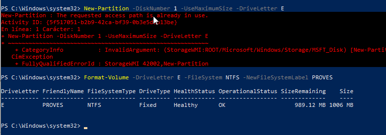
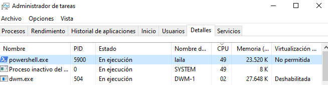
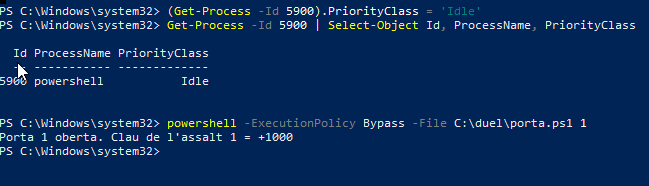
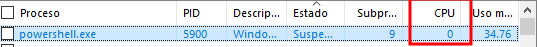
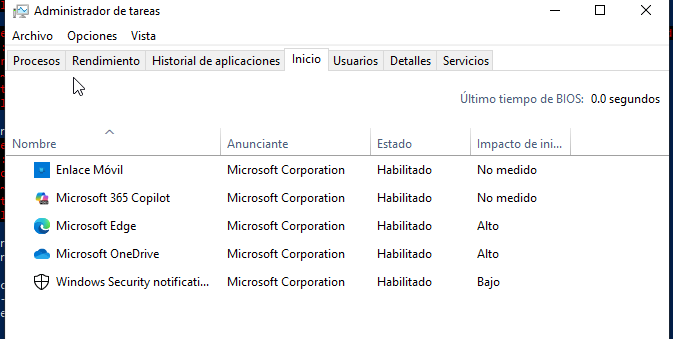
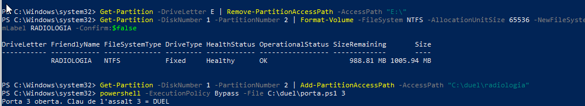
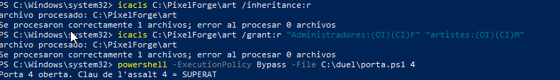
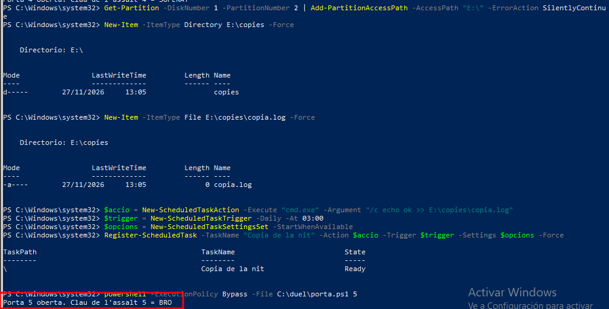
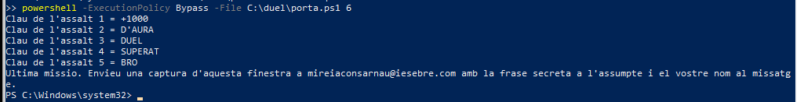

Pas 0: Preparació de l'entorn
Formatació de la unitat secundària en sistema de fitxers NTFS amb l'etiqueta PROVES i lletra d'unitat E:.

Portada / Projecte Windows / Sprint 2
Processos, formateig, particions, usuaris i permisos, còpies i tasques programades · Windows 10 o 11
| # | Apartat |
|---|---|
| 0 | Preparació de l'entorn |
| 1 | Gestió de processos |
| 3 | Particions i sistemes de fitxers |
| 4 | Usuaris, grups i permisos ACL |
| 5 | Tasques programades |
| 6 | Resolució final |
Formatació de la unitat secundària en sistema de fitxers NTFS amb l'etiqueta PROVES i lletra d'unitat E:.

Identificació del PID de PowerShell (5900), canvi de prioritat a Idle, verificació de la baixada d'ús de CPU i revisió de programes d'inici.




Eliminació de la lletra E:, formatació en NTFS amb mida de clúster de 64 KB (65536 bytes) i muntatge del volum a C:\duel\radiologia.

Creació del directori C:\PixelForge\art, eliminació d'herència de permisos i assignació d'accés exclusiu a Administradores i al grup local artistes.

Creació de E:\copies\copia.log i programació de la tasca diària «Copia de la nit» amb l'opció StartWhenAvailable activada.

Execució de porta.ps1 6 per obtenir totes les claus i la frase secreta (+1000 D'AURA DUEL SUPERAT BRO) enviada per correu a la professora.
